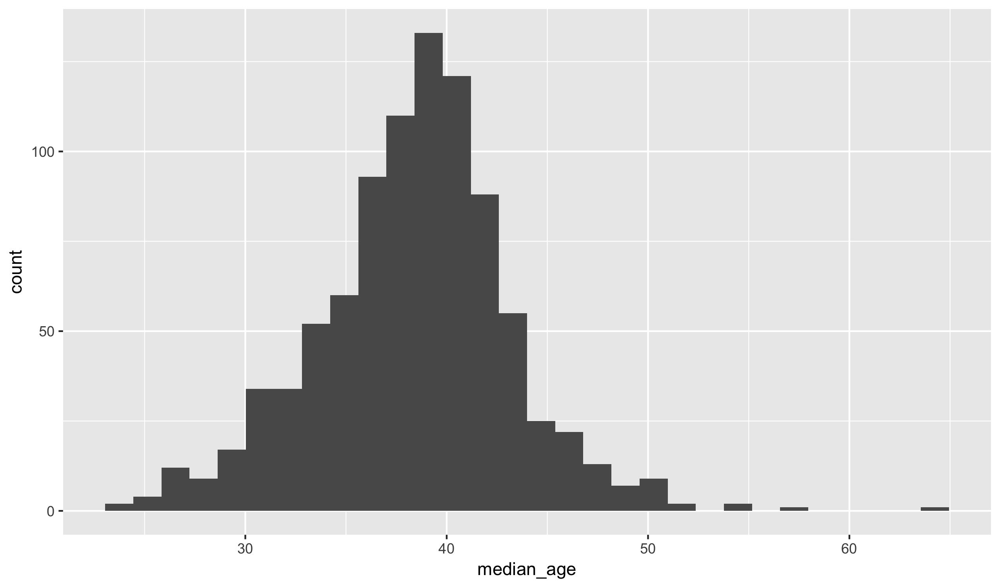

Variable Types
These notes use a set of data describing the commuting patterns in 906 metropolitan areas within the United States.
commute <- read_csv("https://raw.githubusercontent.com/statsmaths/stat_data/gh-pages/acs_commute.csv")## # A tibble: 906 x 12
## name lat lon prop_housing
## <chr> <dbl> <dbl> <dbl>
## 1 Aberdeen, SD 45.52158 -98.69595 16.16231
## 2 Aberdeen, WA 47.14445 -123.82847 21.54960
## 3 Abilene, TX 32.44969 -99.71768 19.82418
## 4 Ada, OK 34.72800 -96.68444 18.07076
## 5 Adrian, MI 41.89508 -84.06637 21.17295
## 6 Akron, OH 41.14873 -81.34953 20.58453
## 7 Alamogordo, NM 32.61316 -105.74168 19.70749
## 8 Albany, GA 31.58951 -84.17389 24.45320
## 9 Albany, OR 44.48868 -122.53432 23.96531
## 10 Albany-Schenectady-Troy, NY 42.78851 -73.94198 20.53007
## # ... with 896 more rows, and 8 more variables: median_income <dbl>,
## # avg_duration <dbl>, median_age <dbl>, same_house <dbl>,
## # same_county <dbl>, car_alone <dbl>, public_transit <dbl>,
## # time_0900_0959 <dbl>The variables available for analysis are described by the following data dictionary and schema:
- name (chr): name of the metropolitan or micropolitan area
- lat (dbl): latitude of the centroid of the area
- lon (dbl): longitude of the centroid of the area
- prop_housing (dbl): average proportion of income spent on housing (0-100)
- median_income (dbl): median annual household income (dollars)
- avg_duration (dbl): average duration of commute (in minutes)
- median_age (dbl): median age of all people in the area
- same_house (dbl): proportion of households in the same house one year prior (0-100)
- same_county (dbl): proportion of households in the same county one year prior (0-100)
- car_alone (dbl): proportion of workers commuting by car alone (0-100)
- public_transit (dbl): proportion of workers commuting by public transit (0-100)
- time_0900_0959 (dbl): proportion of workers commuting to work between 9am and 10am (0-100)
We will look more closely at this interesting dataset throughout the week.
Measures of Central Tendency
A common measurment of the typical value of a numeric variable is the average or mean, mathematically described by:
As we have seen, the function mean in R computes this summary
for a numeric variable. Here is the average duration of commutes
in the US metropolitan areas (in minutes):
mean(commute$avg_duration)## [1] 21.53447The average percentage, across areas, of commuters who drive alone to work:
mean(commute$car_alone)## [1] 80.15011The median is another measurment of the most typical values of a variable, defined as the number for which half of the data is above and half of the data is below the value (rules exist for taking the median of variables with ties and even number of points, but the specifics are not important).
median(commute$avg_duration)## [1] 21.46115Notice that this is not very different from the mean function. What is
an example of a variable that would differ greatly between the mean and
the median?
Measures of Distribution
The median can also be described as the 50 percentile. Other percentiles
can be found with the percentiles function:
percentiles(commute$public_transit)## 0% 1% 2% 3% 4% 5% 6% 7% 8% 9% 10% 11% 12% 13% 14%
## 0 0 0 0 0 0 0 0 0 0 0 0 0 0 0
## 15% 16% 17% 18% 19% 20% 21% 22% 23% 24% 25% 26% 27% 28% 29%
## 0 0 0 0 0 0 0 0 0 0 0 0 0 0 0
## 30% 31% 32% 33% 34% 35% 36% 37% 38% 39% 40% 41% 42% 43% 44%
## 0 0 0 0 0 0 0 0 0 0 0 0 0 0 0
## 45% 46% 47% 48% 49% 50% 51% 52% 53% 54% 55% 56% 57% 58% 59%
## 0 0 0 0 0 1 1 1 1 1 1 1 1 1 1
## 60% 61% 62% 63% 64% 65% 66% 67% 68% 69% 70% 71% 72% 73% 74%
## 1 1 1 1 1 1 1 1 1 1 1 1 1 1 1
## 75% 76% 77% 78% 79% 80% 81% 82% 83% 84% 85% 86% 87% 88% 89%
## 1 1 1 1 1 1 1 1 2 2 2 2 2 2 2
## 90% 91% 92% 93% 94% 95% 96% 97% 98% 99% 100%
## 2 3 3 3 3 4 4 5 7 9 30Can you describe what the 25 percentile means, roughly speaking? Often
we only want the deciles of a variable, for which the deciles function
is used:
deciles(commute$avg_duration)## 0% 10% 20% 30% 40% 50% 60% 70%
## 11.17422 17.16132 18.55514 19.69376 20.60294 21.46115 22.31963 23.22254
## 80% 90% 100%
## 24.30367 25.96911 38.86715How do these eleven numbers tell a bigger picture than the single mean or median?
Measures of Variation
In addition of measuring percentiles, often it is useful to give a single number to describe how spread out a variable is. One common measurment is the variance, the average distance of points from the mean:
If we take the variance of the avg_duration variable:
var(commute$median_income)## [1] 90582868What are the units? Dollars-squared. That doesn’t make much sense, so often we take the square root of the variance instead to arrive at the standard deviation:
Which is computed with the sd function:
sd(commute$median_income)## [1] 9517.503Higher standard deviations indicate that the variable is spread over a larger range and lower deviations indicate that the variable is spread over a smaller range.
Standard Deviation Rules
The standard deviation can feel a bit abstract, but it is best to think of it as a rough measurment of how far data tends to be away from the mean. For example, take the mean of the median age across the metropolitan areas:
mean(commute$median_age)## [1] 38.40971And the standard deviation of this variable.
sd(commute$median_age)## [1] 4.817763As a general rule, we would expect 66% of the data to be within 1 standard deviation of the mean. That is, two-thirds of the metropolitan areas should have median ages between 33.6 and 43.2 years. Similarly, 95% of the data should be within two standard deviations of the mean. That is, between 28.8 and 48 years.
qplot(median_age, data = commute)
Does the graphic confirm these rules of thumb? Note that the rules generally apply only to data that is (very) roughly shaped like a bell curve.